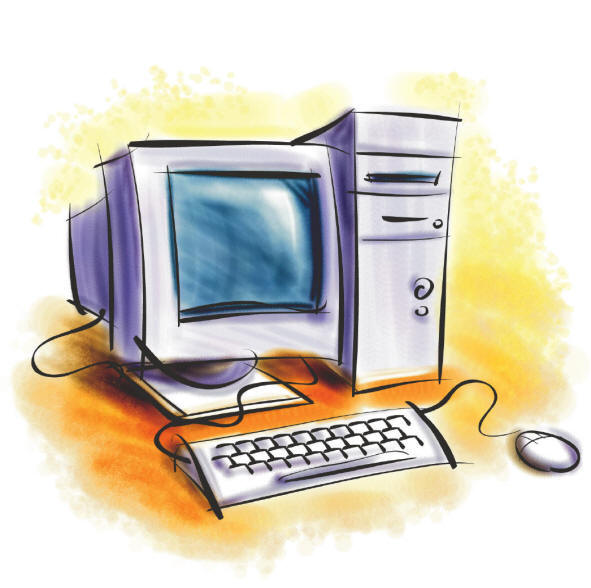

Conceptos de Informática y Computador
En este módulo vamos a estar revisando un poco sobre los antecedentes de la computadora y su incidencia en el mundo moderno, incluyendo avances como la inteligencia artificial. Para llegar a ese punto, debemos pasar por una serie de conceptos y definiciones que debemos conocer o recordar.
Informática
La informática no es más que la ciencia que estudia el procesamiento automático de la información mediante el uso de computadoras y sistemas digitales.
Esto nos permite entonces realizar diversos tipos de actividades, por ejemplo:
- Automatizar tareas: Permite realizar trabajos repetitivos o complejos de forma rápida y sin errores humanos.
- Gestionar datos: Facilita el almacenamiento, análisis y orden de grandes volúmenes de información.
- Comunicación: Conecta a personas y dispositivos a través de redes locales e internet.
Todas estas tareas y actividades se realizan a través de dispositivos que, comercialmente, tienen distintos nombres: tablets, teléfonos móviles, laptops, entre otros. Estos dispositivos son una forma de computadora.
Computadora

Una definición formal de computadora podría ser "máquina electrónica que recibe y convierte información física en digital". Por esto, todos los dispositivos mostrados anteriormente son una forma de computadora.
Actualmente, dispositivos como lavadoras, refrigeradores e incluso vehículos, cuentan con computadoras acopladas, capaces de gestionar procesos, complementar y facilitar tareas al usuario.
.jpg)
Estos y otros términos los estaremos revisando más a profundidad en las diapositivas que se encuentran haciendo clic aquí.